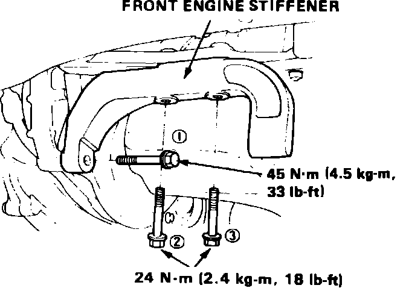

Manual Transmission/Transaxle: Service and Repair
1. Disconnect battery ground cable from battery and transaxle.
2. Release steering lock and place gear selector in Neutral position.
3. Disconnect battery positive cable from starter motor, black/white wire from starter solenoid and green/black and yellow wires from back-up lamp switch.
4. Disconnect speedometer cable from transaxle.
5. Disconnect clutch cable from release arm.
6. Raise and support vehicle.
7. Drain transaxle oil, then reinstall drain plug and washer.
8. Remove both front driveshafts and intermediate shaft as described in ``Front Drive Axle.''
9. Thread a 10 mm bolt into engine block. Attach one end of a suitable lifting chain to bolt and opposite end to engine hanger plate, then lift engine slightly to relieve weight from mounts.
10. Remove engine under cover and splash shield, then disconnect exhaust header pipe from manifold.
11. Disconnect shift lever torque rod from clutch housing.
12. Drive out shift rod spring pin and disconnect the rod.
13. Remove front transaxle mount to engine stiffener attaching bolts.
14. Remove intake manifold bracket and rear engine mount bracket.
15. Remove transaxle housing to engine torque bracket attaching bolts.
16. Remove starter motor attaching bolts and the starter motor.
17. Remove remaining transaxle attaching bolts.
18. Separate transaxle from engine until transaxle clears dowel pins, then carefully lower assembly from vehicle.
Fig. 5 Engine stiffener installation. Integra:

19. Reverse procedure to install. Torque engine stiffener attaching bolts to specifications in sequence shown in Fig. 5.